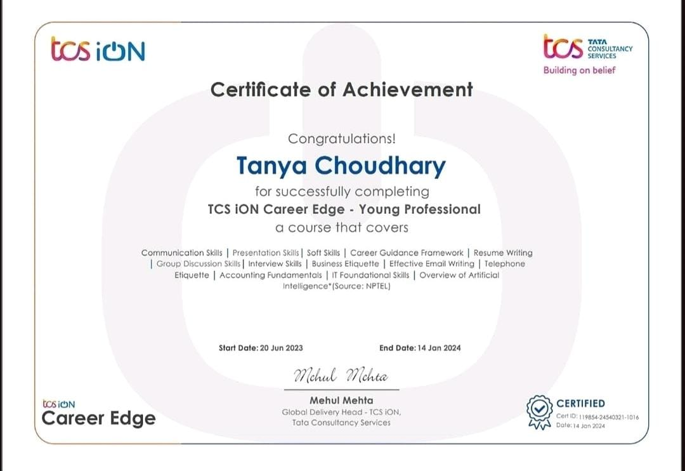
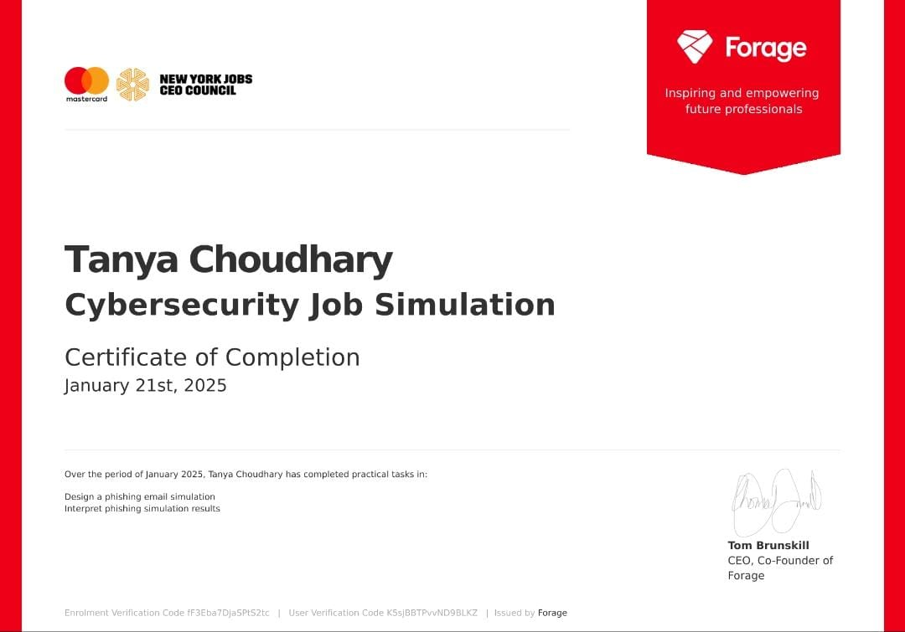
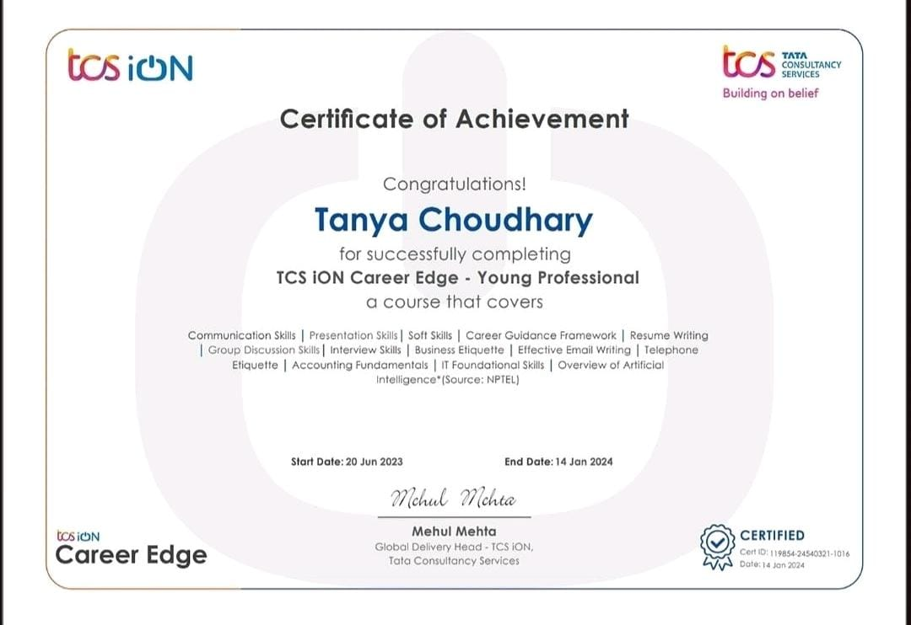
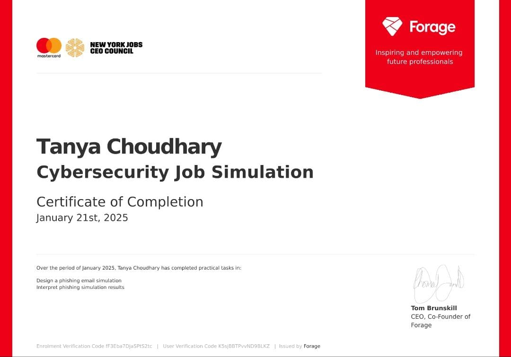
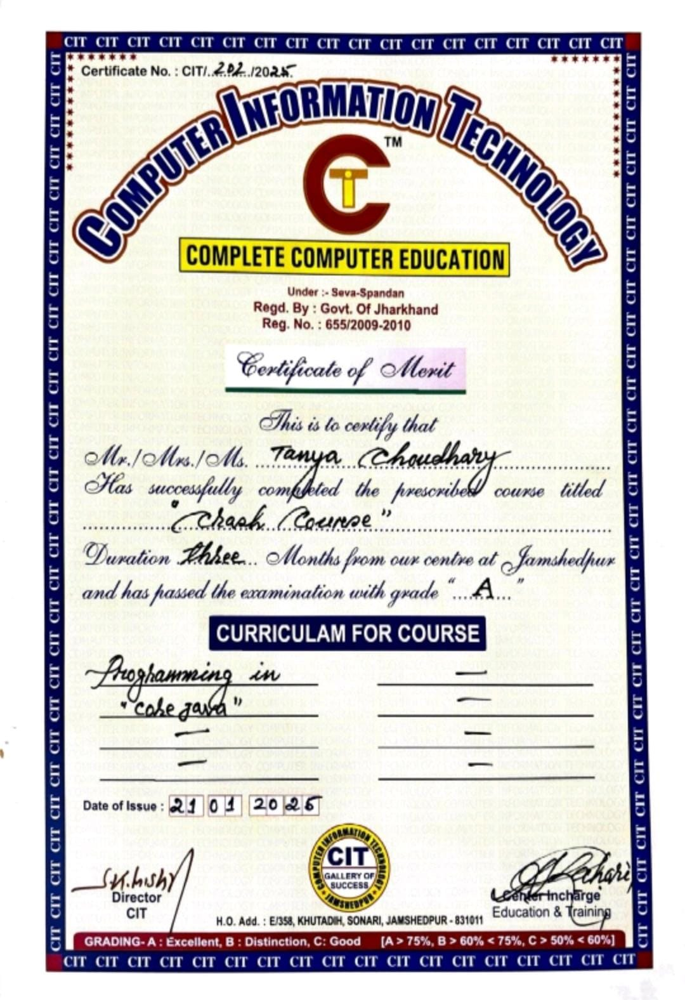
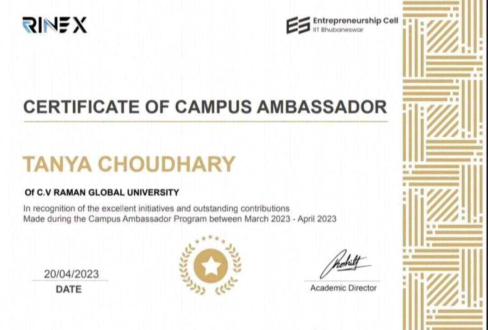
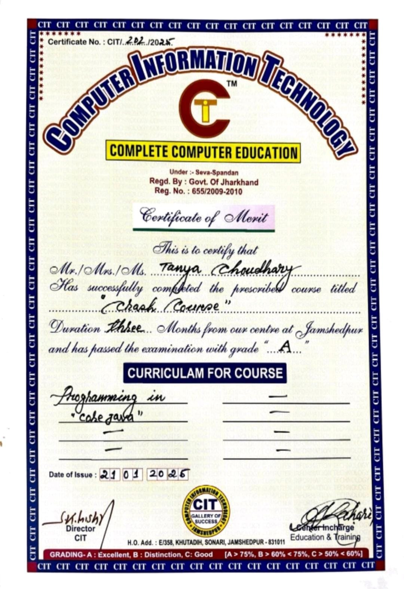
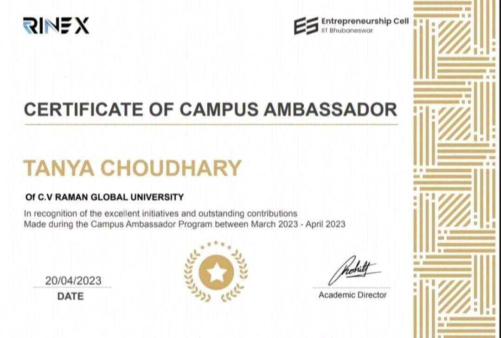

About Me?

TANYA CHOUDHARY
I am a passionate individual from Jamshedpur, a city known for its industrial legacy and beauty. I am currently pursuing my Bachelor's of Technology specializing in Computer Science and Engineering from CV Raman Global University, Bhubaneswar. I completed my schooling from Kerala Samajam Model School, Jamshedpur. As a B.Tech student, I have gained strong technical skills, particularly in programming languages like Java and C. My strengths lie in effective communication, impactful presentations, strategic problem-solving, and leadership qualities, which enable me to approach challenges with confidence and innovation. I received the Rinex Campus Ambassador certificate, which highlights my skills in leadership and communication. I have successfully completed the TCS Young Professional course, which has enhanced my professional and interpersonal skills, preparing me for the corporate environment. I recently completed a Project Management Job Simulation certification offered by Forage in collaboration with Accenture. This program provided me with practical, hands-on experience in managing projects, where I gained insights into key project management principles, including planning, execution, risk management, and team collaboration. Beyond academics, I enjoy playing chess, a hobby that sharpens my strategic thinking and decision-making skills. This has taught me patience, adaptability, and the importance of evaluating all possible outcomes before taking action. I am also deeply committed to staying at the forefront of emerging technologies and continuously upgrading my skills. Whether it’s exploring new programming languages, delving into AI, or understanding the dynamics of cloud computing, I am always eager to learn and apply new concepts to real-world challenges. My ultimate goal is to contribute to the tech community by solving complex problems that have a positive impact on society.
 



 


